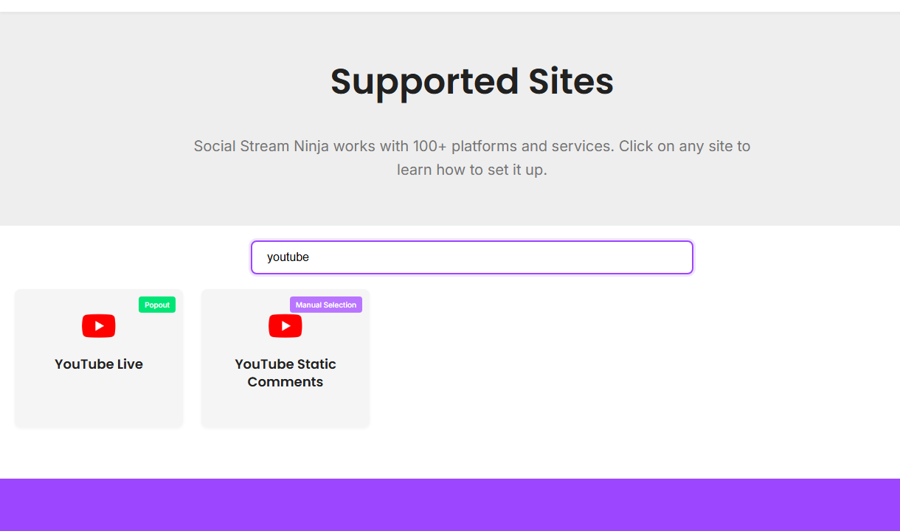

Start From Supported Sites
Search for YouTube first. Social Stream separates live chat from static comments because they are different workflows.

Choose The Mode
| Situation | Try First | Märkmed |
|---|---|---|
| Normal live chat in Chrome | Browser extension / Standard capture | Open the live chat where the extension can read it. |
| Need background reliability or richer API events | WebSocket/API source mode | OAuth scopes, account permissions, and API limits matter. |
| Need your own API quota | Custom YouTube project | Use the YouTube Project Setup guide. |
| Static video comments | YouTube Static Comments | This is not live chat. |
Live Chat Setup
- Make sure the stream is actually live or that live chat is available.
- Open the YouTube live chat page or the mode-specific source page.
- Confirm the dock receives messages before opening OBS.
- Use the same session ID in the dock and overlay.
If YouTube asks for sign-in or permissions, complete that step in the same browser/app context that is doing the capture.
API And OAuth Notes
- API mode can expose different event families than visible page capture.
- Subscriber data can be delayed by YouTube and may only include public subscriptions.
- Write actions need stronger scopes than read-only chat capture.
- The desktop app does not automatically share normal Chrome cookies.
Full setup: YouTube Project Setup.
Levinud parandused
- No chat: confirm the stream is live and chat is visible.
- Chrome works but app does not: sign into YouTube inside the app or use the extension path.
- API mode fails: check OAuth, scopes, project credentials, and quota.
- OBS blank: test the dock first, then the overlay URL in a normal browser.